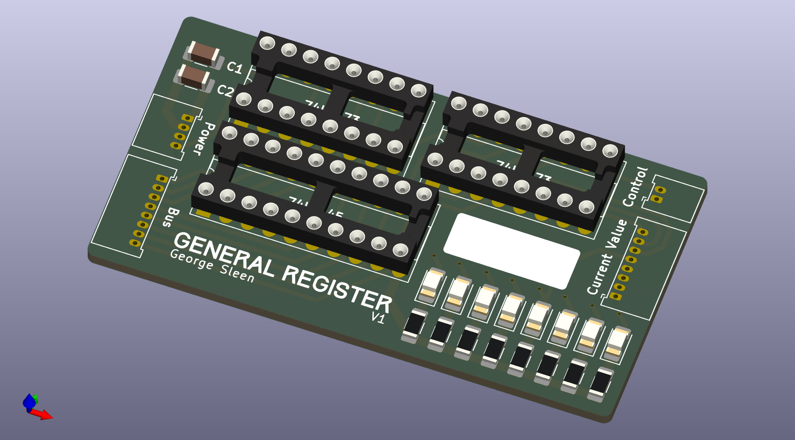
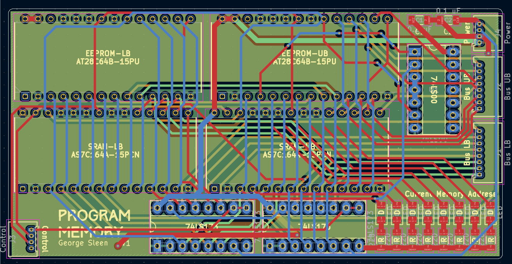
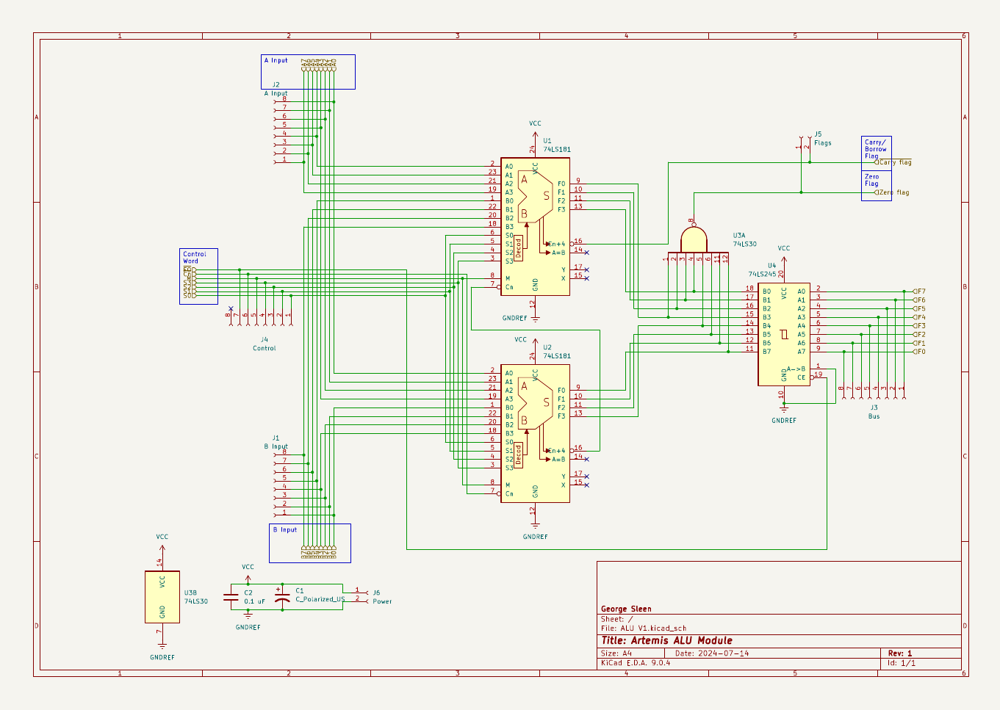
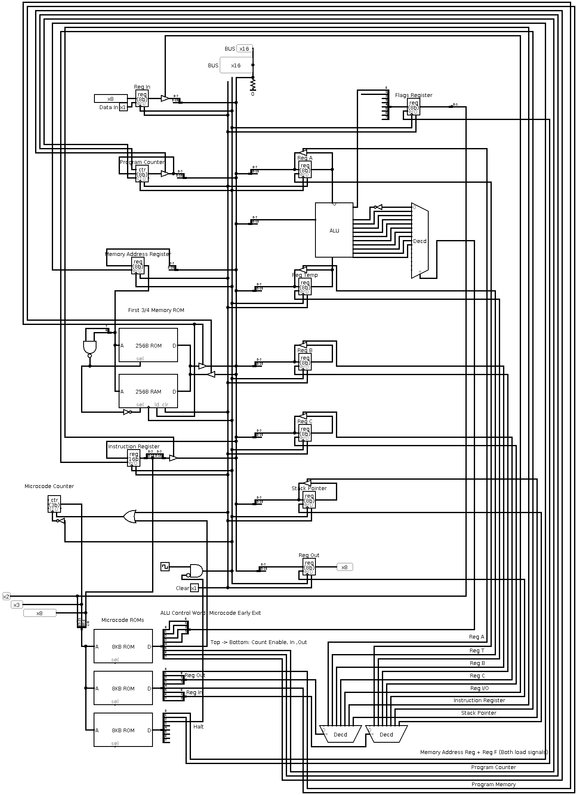

8-Bit Computer
Overview
This project was a ground-up implementation of a fully custom 8-bit computer, built from discrete logic components and custom PCB modules.
The system is Turing-complete, capable of executing a minimal instruction set, and was developed as a way to explore computer architecture at the gate and register-transfer level.
The design takes inspiration from Ben Eater’s breadboard computer, but expands it with a modular PCB-based implementation, Logisim simulations, and a structured hardware layout.
Contributions
- Architecture Definition: Designed a simple but complete 8-bit instruction set and system architecture (registers, ALU, program counter, memory, control logic).
- Schematic & PCB Design: Created KiCad schematics and PCB layouts for the computer’s core subsystems (general registers, ALU, program memory).
- Simulation & Verification: Validated the instruction set and control logic in Logisim before committing to hardware.
- System Integration: Built and tested each module in isolation, then integrated them onto a shared bus.
- Demonstration: Successfully ran small programs demonstrating arithmetic operations and data output.
Technical Highlights
- Registers: Designed custom register boards with tri-state buffer outputs and synchronous load.
- ALU: Implemented addition, subtraction, and bitwise logic operations with discrete logic gates.
- Memory: Designed a program ROM PCB and accompanying RAM for instruction storage.
- Control Logic: Implemented fetch–decode–execute sequencing via microcoded control signals.
- Bus Design: Shared system bus with tri-state management across modules.
Media
Repository
Hardware & Schematics
-
General Register

-
Program Memory PCB

-
ALU Schematic

Simulation
-
Full simulated computer

-
Simple program execution:
- Load
4into Register A - Add
13to Register A - Output result to output register
- Load
Reflection
This project provided a first-principles understanding of how digital computers operate at the logic level.
Key takeaways included:
- How simple bit manipulation and storage gives rise to the complex programs run by computers.
- Using simulation to de-risk hardware design.
- Appreciating the tradeoffs between simplicity, expandability, and physical wiring complexity.
If extended further, this design could support conditional branching, subroutines, or pipelining.